Diode Application#
OR Gate#
An OR Gate is a logic circuit with two or more binary inputs that produces a logic 1 (HIGH) output if at least one input is HIGH, and a logic 0 (LOW) output only if all inputs are LOW.
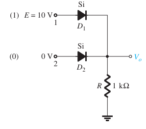

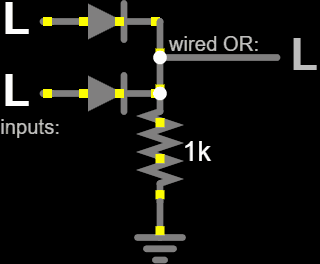
AND Gate#
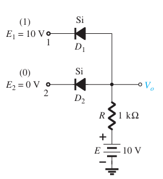
for NAND Gate we have to use transistor and diode.
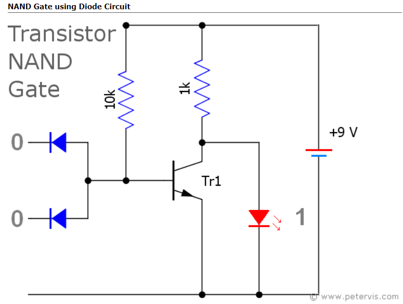
Half-Wave Rectifier#
A half-wave rectifier converts AC to DC by blocking one half of the waveform, using a single diode, and is less efficient than a full-wave rectifier. A full-wave rectifier, such as the full bridge rectifier with four diodes, converts the entire waveform to DC, providing a smoother output.
Power Diode Rectifier#
Power diodes can be used individually as below or connected together to produce a variety of rectifier circuits
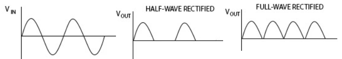
In many applications, we reduce the peak voltage using a transformer before applying it to a half-wave rectifier.
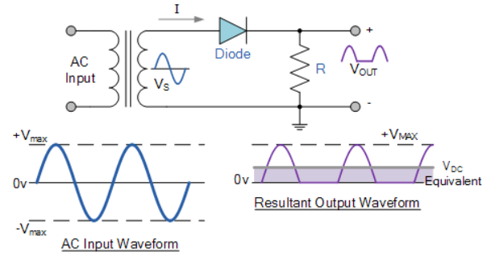
During the positive half-cycle of the AC sine wave, the forward-biased diode allows current to flow, making the output voltage equal to the supply voltage minus the diode’s forward voltage. In the negative half-cycle, the reverse-biased diode blocks current, resulting in an output voltage of zero.
The DC side of the circuit is unidirectional, with the load resistor receiving an irregular voltage waveform comprising positive and zero volts. This voltage is equivalent to \( 0.318 * V_\text{max} \) or \( 0.45 * V_\text{rms} \) of the input sinusoidal waveform.
DC output value calculation
For a half-wave rectified sinusoidal waveform, we need to consider the average over one period, but since the waveform is rectified, it’s zero for half the period. Thus, we compute the average over the non-zero half-cycle and then use the formula for the full period.
The waveform \( v(t) = V_{\text{max}} \sin(\omega t) \) for \(0 \leq t < T/2\) and zero for \( T/2 \leq t < T \).
The average value over the period is:
Since \( v(t) = V_{\text{max}} \sin(\omega t) \) from \(0\) to \(T/2\) and \(0\) from \(T/2\) to \(T\):
Compute the integral:
Substituting the limits:
Since \(\cos\left(\frac{\omega T}{2}\right) = \cos(\pi) = -1\) and \(\cos(0) = 1\):
Therefore:
Since \(\omega = \frac{2\pi}{T}\):
So, the correct average value \( V_{\text{avg}} \) is:
also we write \( V_{\text{rms}} \) in terms of \( V_{\text{max}} \):
Express \( V_{\text{max}} \) in terms of \( V_{\text{DC}} \):
Given \( V_{\text{DC}} = \frac{V_{\text{max}}}{\pi} \),
Substitute \( V_{\text{max}} \) into the \( V_{\text{rms}} \) formula:
Simplify the expression:
So,
Reminder: To find \( V_{\text{rms}} \) of the input sinusoidal signal over one period, and then relate it to \( V_{\text{DC}} \), we should calculate the RMS value for the entire period of the input signal.
RMS value of the input sinusoidal signal:
The input sinusoidal signal \( v(t) = V_{\text{max}} \sin(\omega t) \) over one period \( T \) has the RMS value:
Using the identity \( \sin^2(x) = \frac{1 - \cos(2x)}{2} \):
Thus,
The integral of \( 1 \) over \( 0 \) to \( T \) is \( T \), and the integral of \( \cos(2\omega t) \) over one period \( T \) is zero:
So,
Full-wave rectifier#
Full Wave Rectifier
Power diodes can be connected to form a full wave rectifier, converting AC voltage into DC voltage for power supplies. This rectifier uses four diodes to convert both halves of each AC waveform cycle into a DC signal. While smoothing capacitors can reduce ripple for low-power applications, a full wave rectifier is more efficient for higher power needs, utilizing every half-cycle of the input voltage.
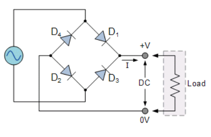
How its work
The Positive Half-cycle
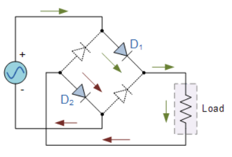
The Negative Half-cycle
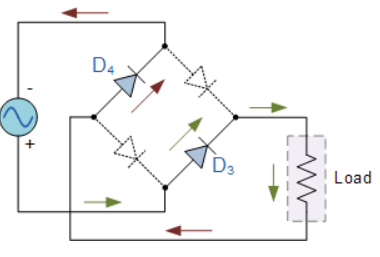
Advantages and Circuit Operation
A full wave rectifier produces a higher average DC output voltage with less ripple compared to a half wave rectifier, resulting in a smoother output waveform. Such as Half Wave Rectifier, can reach to:
Full Wave Rectifier#
A full-wave rectifier converts the entire AC waveform into DC, providing a smoother and more efficient output compared to a half-wave rectifier. It utilizes four diodes to rectify both halves of the AC cycle, resulting in a higher average DC output with reduced ripple.
Power Diode Rectifier#
Power diodes can be configured into various rectifier circuits. A common design is the full-wave rectifier, using a center-tapped transformer and two diodes to handle both half-cycles of the input waveform. This configuration doubles the frequency of the output signal, resulting in a smoother DC output.
DC Output Value Calculation
For a full-wave rectifier, the average DC output voltage \(V_{\text{DC}}\) is given by:
where \( V_{\text{max}} \) is the peak value of the AC signal. This result shows that the DC output voltage is higher and smoother compared to a half-wave rectifier.
The circuit uses two diodes and a center-tapped transformer, allowing each diode to conduct during opposite half-cycles. This configuration doubles the output frequency, making the full wave rectifier 100% efficient. The consistent current direction through the load resistor during both half-cycles ensures a continuous DC output.
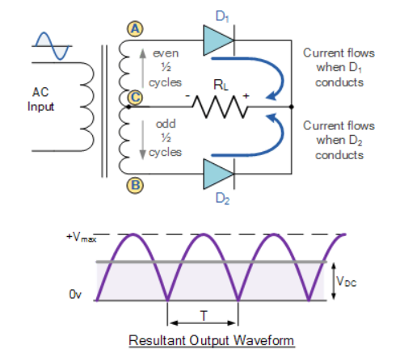
Full Wave Rectifier with Smoothing Capacitor#
Capacitors smooth the full-wave rectifier output, reducing peak-to-peak ripple for a more stable voltage.
Ripple Factor of a Half-Wave Rectifier#
Ripple is the residual AC component in the output of a half-wave rectifier that causes the DC waveform to pulsate. The ripple factor \( \gamma \) quantifies this unwanted AC component and is obtained as:
Proof: Here, \( V_{r(\text{rms})} \) represents the RMS value of the AC component, and \( V_{dc} \) is the DC component of the output.
To determine \( V_{r(\text{rms})} \), we start by expressing the output voltage of the half-wave rectifier as:
where \( V_{ac} \) is the AC component remaining after rectification. The RMS value of the AC component can be calculated using:
We can also write \( V_{r(\text{rms})} \) as:
Expanding the square and integrating, we get:
This simplifies to:
Since \( \frac{1}{T} \int_0^T V_o \, dt = V_{dc} \), we have:
where \( V_{rms} \) is the RMS value of the entire voltage signal.
Therefore, the ripple factor \( \gamma \) can be written as:
For Half Wave Rectifier#
Substituting the values for \( V_{dc} \) and \( V_{rms} \), we find:
Ripple Factor of a Full-Wave Rectifier
The ripple factor (\( \gamma \)) for a full-wave rectifier is defined as:
where \( V_{r(\text{rms})} \) is the RMS value of the AC component, and \( V_{dc} \) is the DC component. For a full-wave rectifier, the ripple factor simplifies to:
Homework : Calculate ripple factor for Full Wave Rectifier with Capacitor#
Regulators#
After rectification, the DC output can be further stabilized using regulators, which are primarily of two types:
Linear Regulators: These provide a stable output voltage by using a linear pass element to drop excess voltage. They are simple and offer low noise but are less efficient, especially with large voltage drops.
Switching Regulators: These use high-frequency switching elements to convert input voltage to a desired output voltage with higher efficiency. They are more complex but provide better efficiency and can step up, step down, or invert the voltage.
Linear regulator#
A simple transistor regulator maintains a relatively constant output voltage (Uout) despite changes in input voltage (Uin) and load resistance (RL), provided Uin exceeds Uout sufficiently and the transistor’s power capacity isn’t exceeded. The stabilizer’s output voltage equals the Zener diode voltage minus the transistor’s base-emitter voltage (UZ − UBE), with UBE typically around 0.7 V for silicon transistors. If Uout drops due to external factors, UBE increases, activating the transistor further to boost the load voltage. Rv supplies bias current to both the Zener diode and transistor, with its value affecting input voltage requirements and regulator efficiency. Lower Rv values increase diode power dissipation and worsen regulator performance.
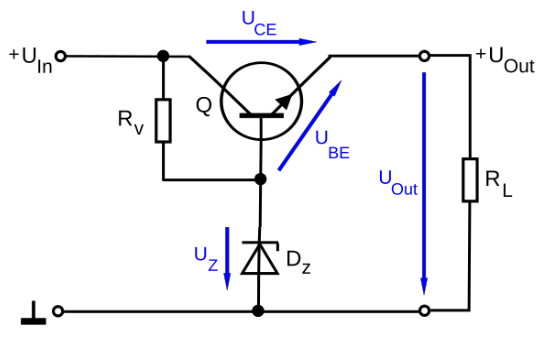
Regulator with a differential amplifier
The stability of the output voltage can be enhanced by using a differential amplifier, such as an operational amplifier. It adjusts the transistor current based on input voltage discrepancies, allowing for an adjustable output voltage via a voltage divider.
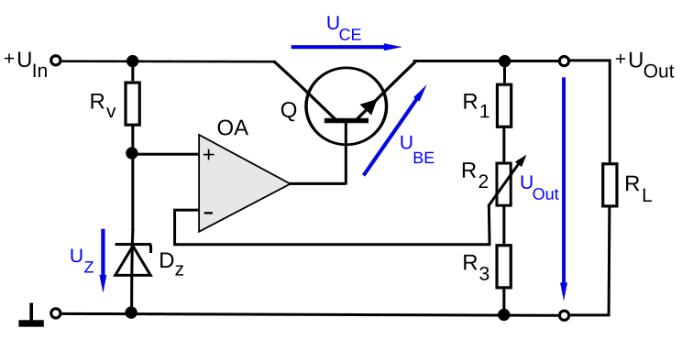
LM-series integrated circuits#
Example of linear regulator is LM317: Adjustable 1.5 A positive voltage regulator (1.25 V-37 V)
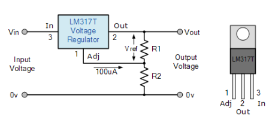
MiniProgect : Complete Linear regulator include:#
Electronic perspective of LR
Pyspice
Switchig Regulator#
A switching regulator (DC-DC converter) is a power supply that converts input DC voltage to a desired DC voltage with high efficiency. It achieves this by turning a switching element ON and OFF, supplying electricity only as needed, unlike less efficient linear regulators which dissipate excess energy as heat.

Switching regulators can create output voltages that are higher (step-up, boost), lower (step-down, buck), or have different polarity than the input voltage. They use a power switch (usually a Field Effect Transistor, FET), an inductor, and a diode, controlled by a feedback loop to maintain constant output. The components can be configured into various designs like step-down, step-up, or inverter circuits.
Buck converter topology#
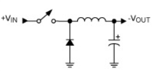
Simple boost converter#
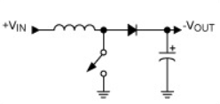
Voltage multiplier#
A voltage multiplier is an electrical circuit that converts AC electrical power from a lower voltage to a higher DC voltage, typically using a network of capacitors and diodes. Voltage multipliers can be used to generate a few volts for electronic appliances, to millions of volts.
Example \( V_o \) of four times the peak of the AC input voltage \( V_i \)
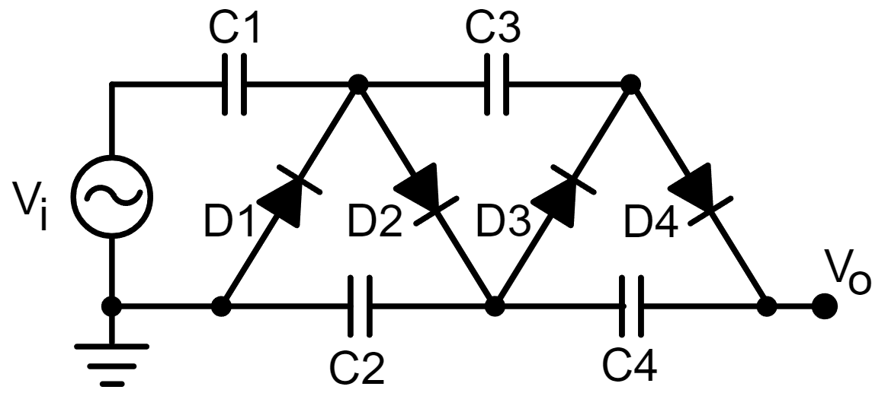
Miniprojects: Continue Voltage Multiplier#
DIODE CLIPPERS#
Clippers are circuits designed to remove or “clip” portions of an input signal. They are used to limit the amplitude of a signal, preventing it from exceeding certain voltage levels. Clippers can be categorized into two main types:
Series and Parallel Clippers
Clippers are generally categorized into series and parallel (shunt) types. In a series clipper, the diode is placed in series with the load, while in a shunt clipper, the diode is positioned parallel to the load.
Positive Clipper#
Positive series Clipper
In a positive clipper, the positive half-cycles of the input voltage are removed. The diode in series with the load blocks the positive half-cycle, resulting in zero output voltage during this period.
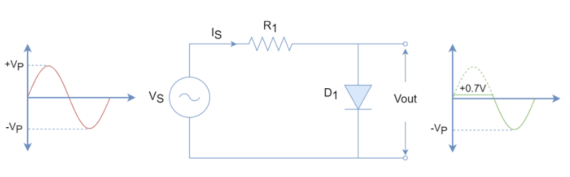
Positive Shunt Clipper
In a positive shunt clipper, the diode is placed in parallel with the load. During the positive half-cycle, the diode is forward biased and conducts heavily, resulting in zero output voltage during this cycle. For the negative half-cycle, the diode is reverse biased, allowing the entire input voltage to appear across the load.
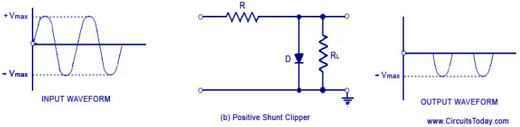
Negative Diode Clipper#
The negative clipping circuit is almost same as the positive clipping circuit, with diode is reconnected reversed polarity
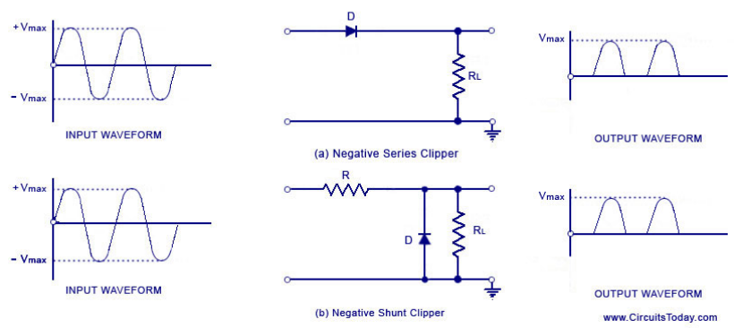
Biased Positive Clipper#
A reverse polarity biasing voltage is added in series with the diode to aid reverse biasing, requiring a higher voltage to forward bias the diode compared to an unbiased diode. This circuit limits any voltage below -0.7V plus the bias voltage.
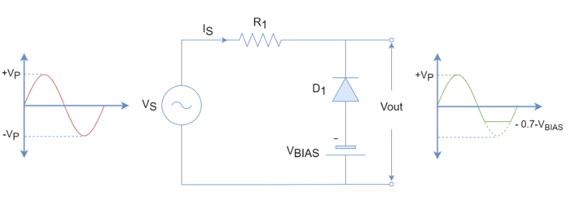
Positive & Negative Cycle Bias Clipper#
A clipping circuit that limits voltage in both positive and negative cycles uses diodes in a reverse parallel arrangement, where one diode conducts while the other remains open. The output waveform is limited to +0.7V during positive cycles and -0.7V during negative cycles. Variable voltage clippers can be created using variable voltage sources, with the bias voltage adjustable based on the application requirements.
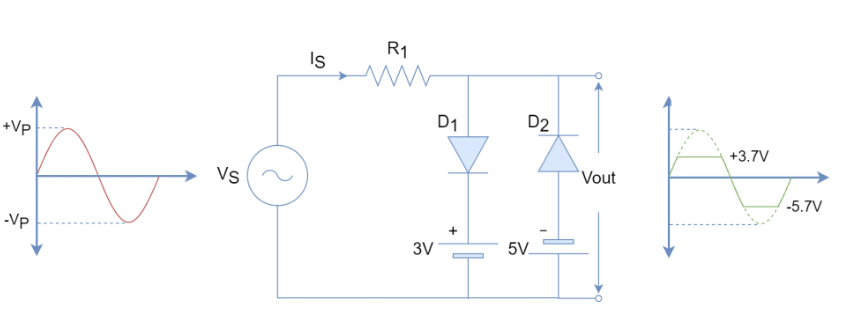
Zener diode clipper#
A Zener diode clipper is designed to limit voltage accurately with minimal components, avoiding the need for biasing voltage required in traditional bias diode clippers. The Zener diode behaves like a normal diode when forward-biased, but conducts above its Zener voltage in reverse, necessitating a series resistor to prevent damage. It clips both cycles, limited by the forward voltage drop during negative cycles and conducting above Zener voltage during positive cycles.
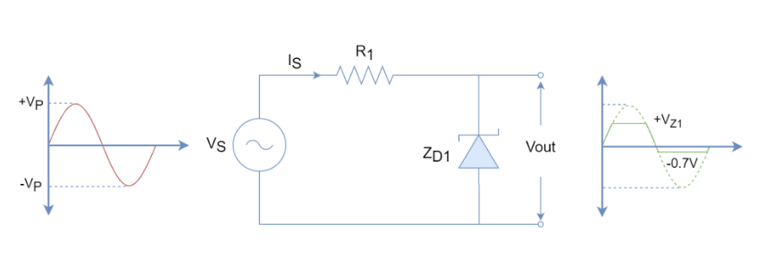
full-wave clipper based on two Zener diodes
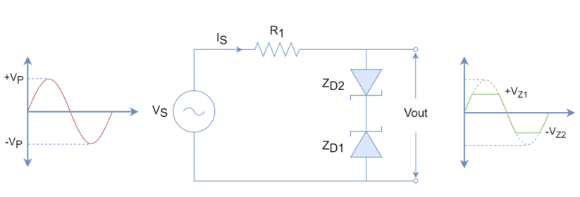
Clampers#
The previous section explored diode configurations that clip signals. This section examines diode configurations that shift signals to different levels, focusing on clamper networks consisting of a diode, resistor, and capacitor. These networks shift the signal’s DC level without altering its shape, relying on a sufficiently large time constant to maintain the capacitor’s charge.
Types of Clampers:
Positive Clamper
Negative Clamper
Positive Clamper Circuit#
A clamping circuit restores the DC level of a signal and shifts the output signal to the positive portion of the input. During the negative half cycle, the capacitor charges to the peak value, and in the positive half cycle, the signal is positively clamped, resulting in an output that shifts according to the input changes.
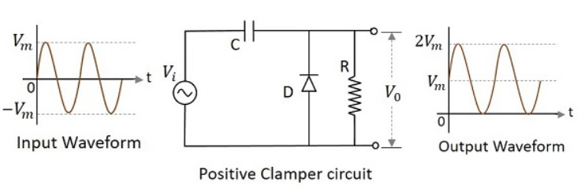
Positive Clamper with Positive Vr See below figure,
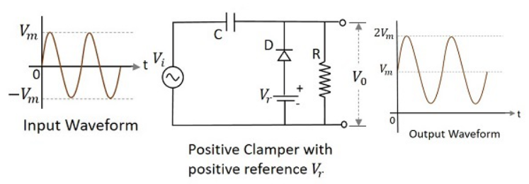
Homework: Think about Positive Clamper with Positive Vr using zener diod#
Test with Pyspice
Negative clamper#
During the positive half cycle of the input AC signal, the diode is forward biased, allowing current to charge the capacitor to the peak input voltage. During the negative half cycle, the diode is reverse biased, preventing current flow, and the stored charge in the capacitor combines with the input voltage to produce an output voltage of \( -2V_m \), resulting in a downward-shifted signal.
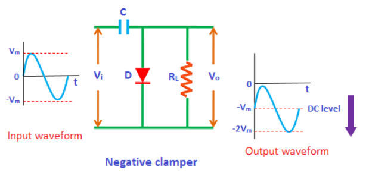
Negative clamper with Bias
See following figures
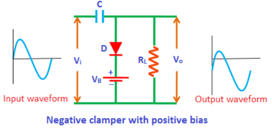
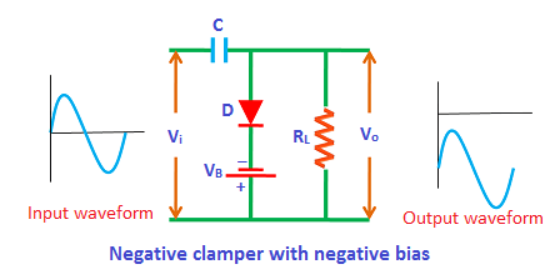
Protective Diode#
Diode protector to limit the emitter–base voltage#
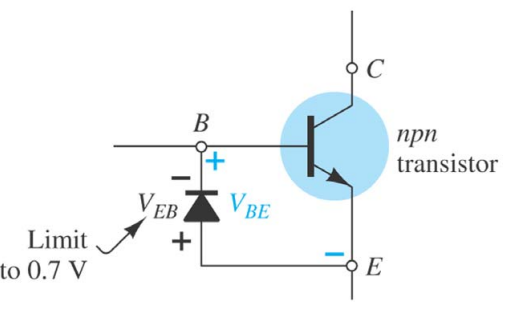
Diodes can be used to limit the input of OPAMP to 0.7V#
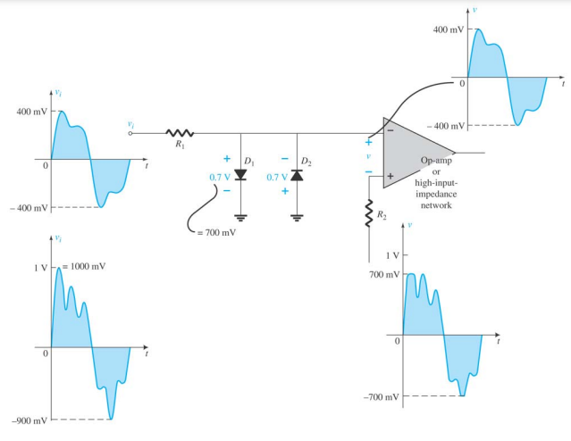
POLARITY INSURANCE#
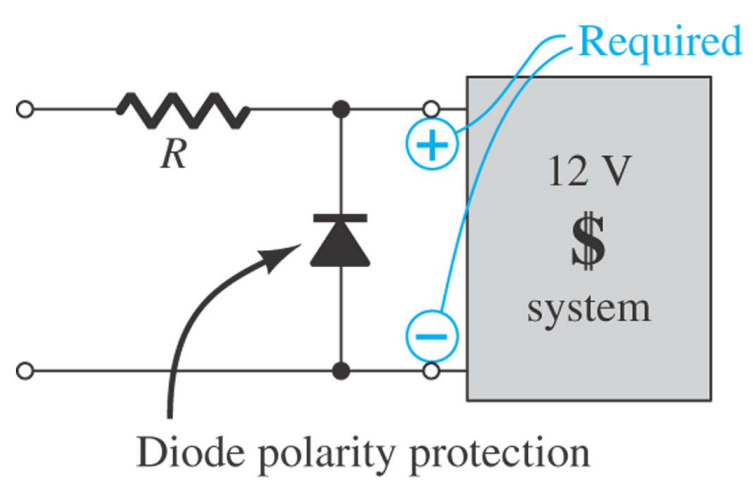
Relay with Diode Circuit#
A relay circuit consists of three key components: switches, a relay coil, and a diode. The switches ensure reliable electrical contact without bounce, while the relay coil controls the switching between open and closed states. The diode provides transient voltage suppression, protecting the switching circuitry from voltage spikes caused by the relay’s activation and deactivation.
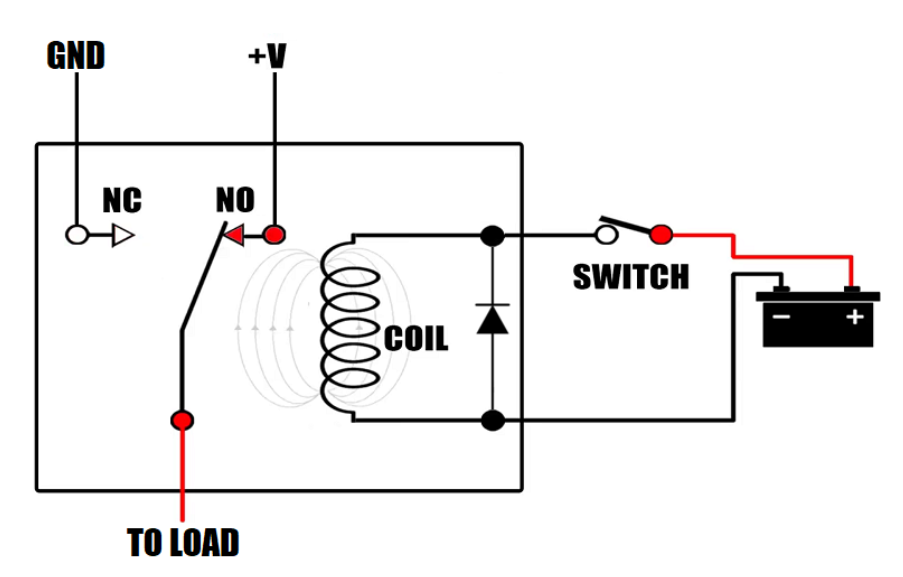